Hoy hablaremos de una raza bañada en Oro puro. los Golden Retriever
llevan este nombre no solo por el color de su pelaje, sino por todas las
características que lo convierten en una mascota valiosa, su temperamento gentil,
su fidelidad y tranquilidad la hacen una de las razas mas populares en el mundo.
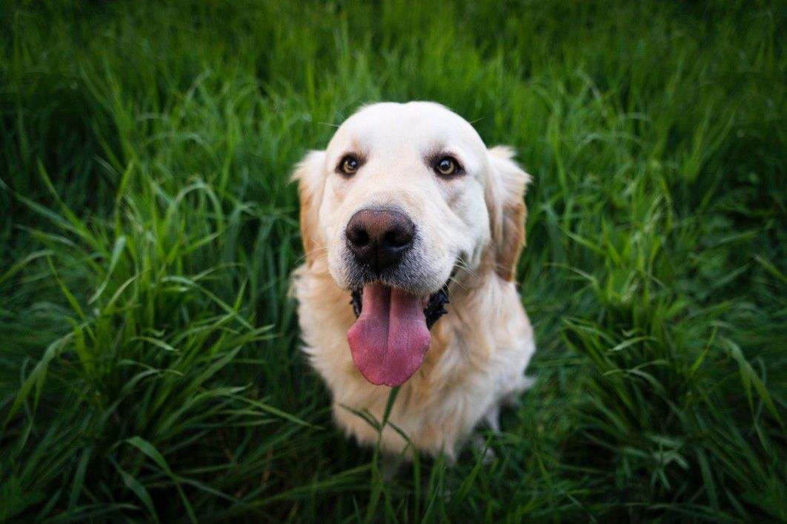
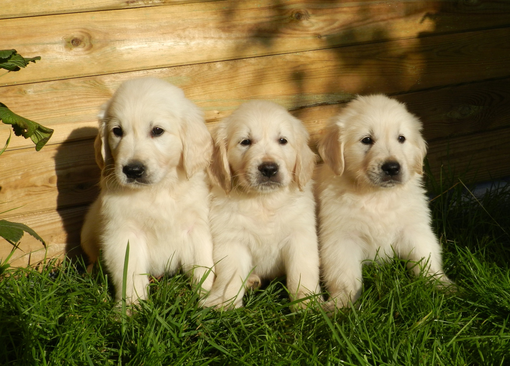
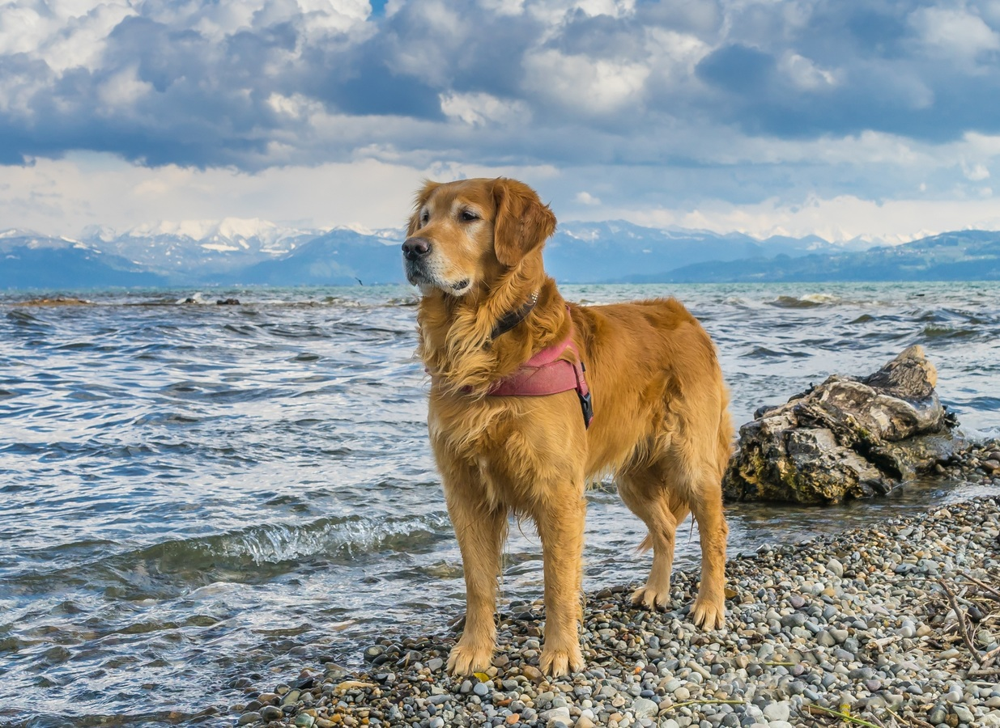
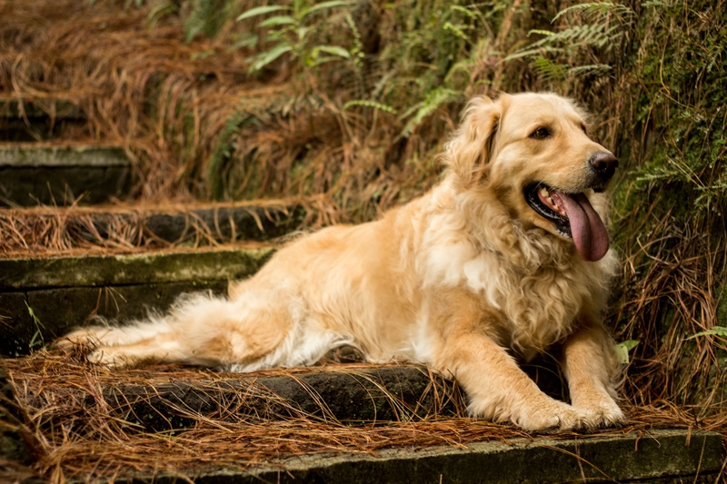
Adóptame
Historia(del(golden(retriver!
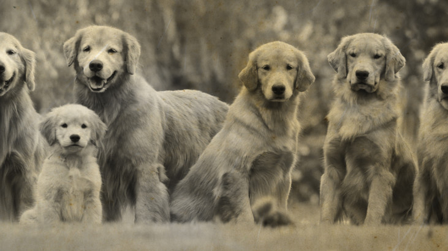
Los Golden Retriever se originaron en la década de 1860, en el área rural escocesa, en esta época las familias adineradas acostumbraban a cazar distintos tipos de aves, motivados por querer crear al mejor perro de caza , y debido a la mala adaptación al terreno escoces que habían tenido razas como el Setter y algunos pointers, el Barón Dudley Marjoribanks , comenzó la búsqueda de un perro leal, guardián del hogar, útil como sabueso, y cobrador depresas con una mordida suave.
La cruza original fue entre un perro perdiguero de color amarillo, Nous, y una perra Tweed Water spaniel, Belle. La raza de tweed water spaniel está extinta, pero en aquel entonces era común en las áreas fronterizas. En 1868, esta cruza produjo una camada que incluía cuatro cachorros, los cuales se convirtieron en la base de un programa de mejoramiento genético que incluyó al setter irlandés, el bloodhound color arena, el perro de aguas de San Juan o Terranova menor, y dos retriever con pelaje rizado de color negro .
Las líneas de sangre fueron endogámicas y seleccionadas con exactitud por Dudley Marjoribanks, apegado a su ideal de desarrollar el mejor perro de caza. Su visión incluía un perro más fuerte y poderoso que los retriever previos, uno que fuese gentil y apto para el entrenamiento
Esta raza fue ganadora del primer concurso de obediencia realizado por la American Kennel Club. El American Kennel Club (AKC) es un registro de pedigrí de perros de raza pura en los Estados Unidos
El golden retriever se crió para ser un perdiguero, especialmente para cazar aves acuáticas, y la raza se obtuvo tras cruzar varias razas. El fruto de tal combinación fue un perro nadador fuerte y robustoque podía resistir en aguas frías, rastrear presas heridas y manejar aves mutiladas.
En la actualidad los golden retrievers son solo buenos perdigueros y mascotas familiares; también son populares como perros de apoyo para ciegos
y discapacitados, y como perros de búsqueda, rescate y perros para detención de contrabando. Pocos perros pueden presumir de tanta versatilidad.
{Características De Un Golden}
El golden retriever tiene un pelo resistente al agua ondulado o liso y de color desde dorado hasta crema.
Una de las características más interesantes de esta raza son los flecos en cuello, patas, muslos, parte inferior y cola.
La cabeza del perro es fuerte y ancha. Las orejas no son muy grandes, pero están implantadas en una zona
alta en la cabeza y cuelgan justo por debajo de la línea de la mandíbula. El pecho es profundo y el cuerpo está bien equilibrado.
Caracteristicas
Hembras
Machos
Origen
Reino Unido
Escocia
Peso
25 - 29 kg
29 - 32 kg
Altura
53 - 55 cm
58 - 62 cm
Tamaño
Medio
Robusto-Grande
Edad
10 - 13 años
10-13 años
Color
Oro Oscuro
Crema, Dorado
Salud
Algunos sufren de Enfermedad heraditarias como displasia de cadera, displasia de codo, de la vista, alergias en la piel
" "
{Personalidad Golden}
Ser muy afectuosos con los humanos.
Tener un sentido del olfato muy agudo.
Tener un amplio espectro auditivo.
Ser capaces de detectar el movimiento y la luz a la distancia
Tener una piel externa que se renueva de manera periódica.
El temperamento del Golden Retriever es una característica de la raza y se describe en la norma como
amable, amigable y confiado. No son «un perro de un sólo hombre» y son generalmente tan amables
con los extraños como con los familiares para ellos.
Es tranquilo, naturalmente inteligente y obediente, con un deseo de agradar excepcionalmente.
La mayoría de los Goldens son de alta energía y necesitan mucho ejercicio, como la agilidad del perro.
Alimentación adecuada para el golden retriever
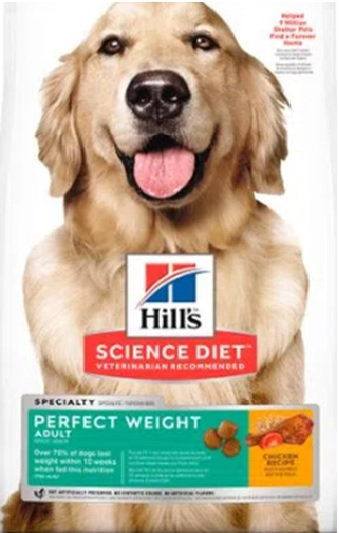
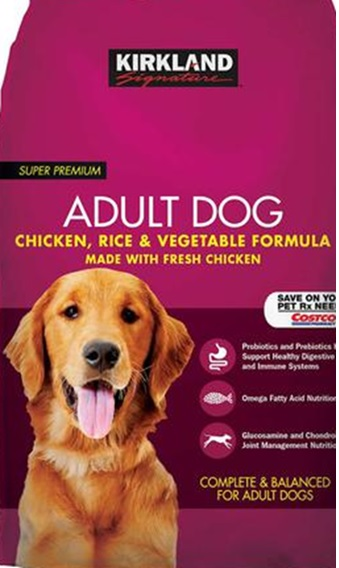
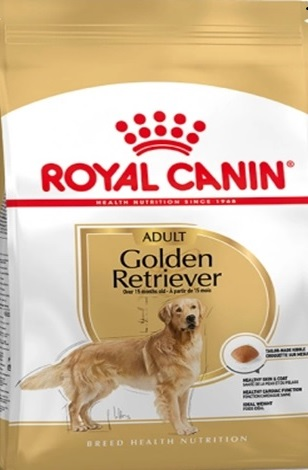
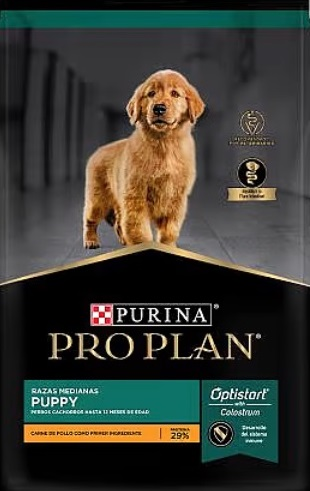
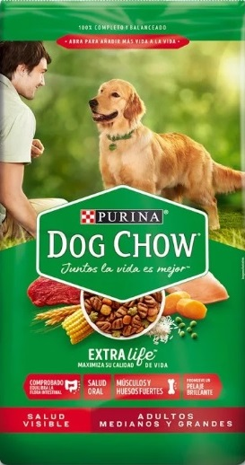
Para saber qué dar de comer a un golden retriever tienes que tener en cuenta varios aspectos: su edad,
su tamaño y los problemas de salud más frecuentes de la raza. Es importante proporcionarle un alimento
acorde a la etapa en la que se encuentra, diferenciando entre comida para cachorro, para perro adulto
o para perro senior. También es importante elegir un alimento para perros de tamaño mediano o grande,
ya que su cuerpo no necesita lo mismo que el cuerpo de un perro de raza mini. En Tiendanimal puedes
encontrar piensos de todo tipo que cuentan con gamas específicas para perros grandes, así como para
cachorros, adultos y senior.
¿Qué no debe comer un Golden Retriever?
Existen ciertos alimentos que son ingeridos normalmete por los humanos, sin producir daño alguno en
su salud pero que pueden ser tóxicos para los perros . De hecho, algunos de estos productos pueden llegar
a ser mortales para los canes. Por esta razón, conviene conocer cuáles de estos alimentos que son frecuentes
en nuestra dieta deben ser prohibidos en la de nuestras mascotas.
1. Chocolate:
El chocolate contiene una sustancia llamada teobromina, que varía según el contenido de cacao.
La dosis letal varía en cuanto a la proporción del peso del perro y a la proporción de cacao.
producirle de vómitos y diarrea hasta la muerte
2. Leche:
La leche es un alimento con el que se suele alimentar a los animales desde bien cachorros. No obstante,
la mayoría de los perros son intolerantes a la lactosa y la leche puede causarles dolor de estómago,
diarrea o vómitos.
3. Queso:
El queso esta prohibido para los perros como la leche, sus derivados también están prohibidos en la dieta de los perros. Estos alimentos grasos pueden causar malestar gastrointestinal o en algunos casos incluso pancreatitis . El problema del queso es el mismo que el de la leche
4. Cebolla:
La cebolla es peligrosa para las mascotas puesto que puede destruir los glóbulos rojos
de la sangre del animal y provocarle una anemia. También puede generar problemas respiratorios
y taquicardia.
5. Ajo:
Nunca le dés comida con especias a tu perro. Al igual que la cebolla, el ajo puede destruir los glóculos rojos de la sangre del animal. Cuanto más fuerte es el ajo, más tóxico será.
Pertenece a la misma familia que la cebolla, pero el ajo es más fuerte, es decir, el nivel de toxicidad es muy alto
6. Uvas:
Las uvas son otros de los alimentos tóxicos para los perros. Estas frutas pueden provocar a los canes vómitos
y diarrea que puede agravarse con otros síntomas como la falta de apetito, deshidratación, oliguria e insuficiencia renal.
7. Aguacate:
El aguacate contiene una sustancia llamada 'persina' que tiene efecto insecticida y
antifúngico que, en las mascotas, puede provocar diarrea, vómitos, edema pulmonar y
daño cardíaco. Esta sustancia es nociva para muchos animales domésticos.
8. Café:
Dado su alto contenido en cafeína puede presentar en el animal síntomas como taquicardia,
nerviosismo o hiperactividad.
9. Alcohol:
Si el alcohol de por sí ya es dañino para los humanos, para los perros lo es mucho más.
Puede causarles la muerte por coma etílico.
10. Azúcar y dulces:
El Azúcar y los dulces pueden ser perjudiciales para nuestra salud y para la de nuestra nuestros perros. Un perro en estado salvaje, nunca comería dulces
. Los posibles riesgos se relacionan con la aparición de caries, diabetes y aumento de peso. Siempre es mejor elegir alternativas libres de azúcar para nuestros perros
Educación y adiestramiento del Golden Retriever
Respecto a la educación del Golden retriever, decir que es una raza fácil y adaptable, puede ser perfecta para los amos más novatos, pero se deben saber encauzar de forma responsable todos sus talentos, sin abusar del animal, ya que el golden cede siempre la posición de superioridad a los humanos que lo rodean.
Para empezar el adiestramiento del golden retriever y enseñarle algo, lo que tenemos que hacer primero es conseguir que el perro nos preste atención. Busca una palabra determinada cuando le quieras enseñar algo y cuando el animal te preste atención camina hacia él y dale un premio al mismo tiempo que le dices “muy bien” o “buen perro”
Cuando el golden retriever haya aprendido a hacer sus necesidades donde hayamos estipulado, esté correctamente socializado y hayamos conseguido que interiorice la palabra escogida para captar su atención, podemos continuar con su educación y pasar a las órdenes básicas. Entre todas ellas, destacan la orden "quieto", "sienta", "ven aquí" y "a mi lado"
Su relación con los niños y en familia
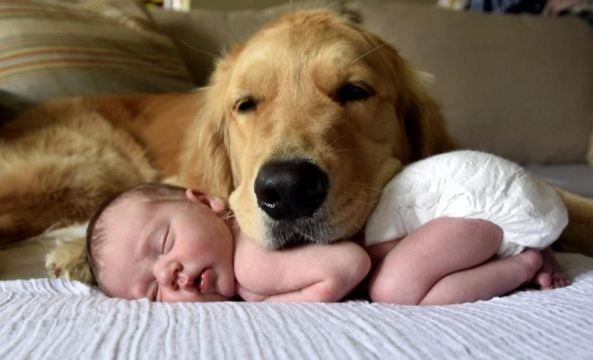
El Golden Retriever es un excelente perro familiar, el cual, desarrolla un vínculo muy fuerte con familia que lo adopta, y en especial con su dueño. Es un perro muy cariñoso que buscará el afecto de todos y cada uno de los miembros de la familia.
Su carácter , tranquilo y dócil, lo convierte en un animal muy sociable, inteligente, bondadoso y confiado. Unas cualidades que han hecho de él uno de los canes más populares en los hogares. Especialmente, son compañeros ideales para los niños de cualquier edad , sobre todo si son socializados y entrenados desde cachorros, puesto que no son nada agresivos ni territoriales. Asimismo, les gusta estar rodeados de gente y son igualmente amistosos, tanto con conocidos como con extraños.